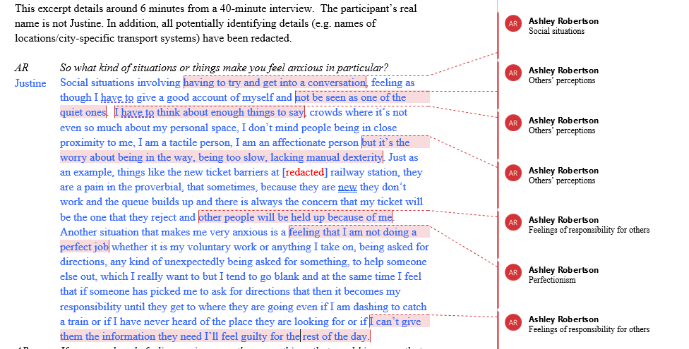
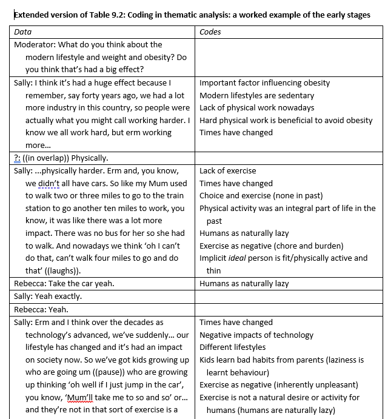

4 Data analysis
This chapter has activities to support you with Thematic Analysis. This chapter, alongside with Ashley’s lectures, will talk you through the six phases required for TA; we advise using Braun & Clarke (2022) to structure your data analysis. This can be accessed through the library, using the following link: https://go.exlibris.link/Z9qxllzH. There is also a good overview in Braun & Clarke (2013), which is on the reading list.
Overview of the steps of TA
- Familiarisation (p.42 in the Braun & Clarke (2022) book)
- Doing coding (p.59)
- Generating initial themes (p.78)
- Developing and Reviewing themes (p.97)
- Refining, Defining and Naming themes (p.108)
- Writing up your analysis (p.118)
4.1 Coding (Phases 1-2)
Here, we’ll focus on Phases 1 and 2 of the process. Familiarisation starts on p.42 and Coding starts on p.59 of the Braun & Clarke (2022) book. We also covered how to do Phases 1 and 2 of the analysis in the Thematic Analysis lecture in Semester 1 Week 11.
4.1.1 Phase 1: Familiarisation (p.42)
- Transcribing (or sorting/anonymising your transcript) helps you to become more familiar with your data
- Read over the transcript, but do it in an ‘active’ way. This means reading while searching for meanings and patterns
- Note down anything of interest that comes up, either in a particular part of a transcript or thinking about the overall dataset
Practical steps:
Read through your transcript and take notes and/or make comments in the margins. Generate a list of ideas: what is interesting about the discussion? Are there any contradictions that you spot? What patterns do you observe?
4.1.2 Phase 2: Generating initial codes (p.59)
- Codes identify a feature of the data that seems interesting
- The process of coding involves going through the transcript and thinking about the data, and picking out what seems interesting/important.
- Try to apply short, specific, labels to each part of the transcript as you go through it.
- Coded data is specific (themes, which come later, are broad) -you will likely end up with quite a lot of different codes.
- Code for as many patterns as you can at this point - it won’t all make it to the next stage, but it’s good if you pick up as much as you can at this stage.
Practical steps:
Insert labels beside quotes - what is interesting about the quote? What does it tell us in relation to your research question?
4.1.3 How to actually do the coding (logistically)?
There are many different ways to approach this - find the way that works for you! There are also different software to conduct thematic analysis (such as NVivo); you are welcome to use these if you wish, but due to the introductory nature of this course we don’t have guidance for using them, so you need to do learn it independently, should you want to use one.
Option 1: Hand-coding
Option 2: Code using Word, by adding comments

Option 3: Construct a table for your codes and quotes. This is an example from Braun & Clarke (2013)

4.1.4 Activities
4.1.4.1 Activity 1: Example of coding
Have a look at this example of coding (using Thematic Analysis) from Braun & Clarke (2013): HERE
Think about the following:
Do you agree/disagree with the codes that the authors have chosen? Which ones, and why? Are there any additional codes that you think might be worthy of consideration?
4.1.4.2 Activity 2: Try it yourself!
It’s time to have a go at coding yourself now!
Read through this transcript, taking brief notes individually the first time you read it. What things did you pick up? If working with others, discuss your codes - what were the similarities/ differences?
4.2 Developing themes (Phases 3-6)
Here, we’ll focus on Phases 3 to 6 of the process. You can find information on each of these phases in the Braun & Clarke (2022) book: Generating Initial Themes (p.78), Developing and Reviewing Themes (p.97), Refining, Defining and Naming Themes (p.108) and Writing up your Analysis (p.118). We also covered how to do Phase 3 in in the lecture for Semester 1 Week 11, while Steps 4-6 were in Semester 1 Week 12. For these activities, you are welcome to do them individually or in pairs/small groups - whichever you prefer!
4.2.1 Phase 3: Generating initial themes (p.78)
- In this stage, you should sort the codes into potential themes. Here, you will start to analyse your codes, and consider how they might share an idea or concept.
- It might be helpful to visualise this in some way, and see how the codes fit together.
- You may have codes that don’t seem to fit anywhere, others will fit neatly into themes, others might be in sub-themes
- You end this step with a collection of candidate themes (and potentially sub-themes)
Practical steps:
- Start to group your initial codes together
- Can you see a pattern of shared meaning across different codes?
- What are the similarities across codes?
- End this stage by collating all the coded quotes relevant to each theme.
- Themes can be descriptive or interpretative (see Braun & Clarke, 2013, Ch 11).
- Using tables or mind maps at this stage can be helpful
4.2.2 Phase 4: Developing and Reviewing themes (p.97)
In Phase 4, you check your themes to see whether they make sense a) when you look at the coded extracts for that theme and b) when you look at the whole dataset.
Checking the coded extracts
Reviewing at the level of the coded extracts. Read all the collated extracts for a theme…do they form a coherent pattern? Do they tell an important story about shared meaning? Are you sure they are themes rather than topic summaries?
If they seem like themes and the coded extracts fit well underneath them, then move on to checking the themes against the dataset.
If they don’t, is it the case that a) the theme itself is problematic and needs reworked or b) the theme is fine, but some of the data doesn’t fit?
Checking themes against the whole dataset
Look across the entire dataset and consider your theme(s) – do they accurately reflect the meanings in the dataset? Do they tell you about the important patterns that you observed in the dataset?
Practical steps:
- This involves checking that the themes ‘work’ in relation to both the coded extracts and the full data-set.
- Reflect on whether the themes tell a convincing and compelling story about the data, and begin to define the nature of each individual theme, and the relationship between the themes.
- It may be necessary to collapse two themes together or to split a theme into two or more themes, or to discard the candidate themes altogether and begin again the process of theme development.
- It may be that your theme is actually a topic summary and needs reworked.
- Not every participant will make specific reference to every theme - that is ok - but think about how each person is represented in the analysis.
- It can be helpful at this stage to group the relevant quotes together that represent each given theme
4.2.3 Phase 5: Refining, Defining and Naming Themes (p.108)
- During this phase, you should define and refine the themes.
- Define and refine = identifying what this theme is about, what aspect of the data is captured by each theme?
- For each theme, you need to conduct and write a detailed analysis
- In your report, you will report one theme with sub-themes or two themes (no subthemes) – do they explain different things without overlapping too much?
- Try to choose names for themes that are not one word or likely to indicate topic summaries (see the Semester 1 Week 11 Lecture if you want to revisit this)
Practical steps:
- This involves being able to explain each theme: ‘What story does this theme tell?’ and ‘how does this theme fit into the overall story about the data?’.
- Identify the ‘essence’ of each theme and construct a concise, punchy and informative name. Usually, you would aim for two themes for the qualitative report
4.2.4 Phase 6: Writing up your Analysis (p.118)
- The analysis should provide a concise, coherent, logical, non- repetitive and interesting account
- The write up must provide sufficient evidence of the theme(s) (this is where the quotes come in!)
- The extracts you choose should clearly illustrate the theme
Practical steps:
- For the RM2 qualitative report, you should report either two themes (no subthemes) or one theme with 2-3 sub-themes. This is to allow you to balance depth and breadth.
- As a rough guide, each theme should include approx. two to five quotes to illustrate it in the write up. Think about which quotes best illustrates your analysis.
- If you are doing a qualitative dissertation, you will have scope to go further with your analysis; it is a good idea to discuss your data with your supervisor throughout the analytic process.
4.2.5 Activities
4.2.5.1 Activity 1: Try it yourself!
We’ve provided the same transcript as for phases 1-2, but it’s a little longer (to give you more scope to develop themes) - you can find it here. You can use the codes you developed last time (adding to them for the additional parts of the transcript), or you can recode the data again if you prefer - either option is fine.
- Once you have your codes, try to organise them into themes.
- Group together the codes that seem similar in some way - can you think of an overarching ‘theme’ that describes them?
- Are there any codes that don’t ‘fit’ anywhere? (that’s okay if so!)
- Can you identify any quotes that you would use to evidence the themes? Do these definitely match well onto the theme?
4.2.5.2 Activity 2: Bad analysis
This is an additional activity and only if you have time/want to delve a bit further. Have a look at the analysis here. This is an example from Braun & Clarke’s book. Why do you think it might be considered a poor example of thematic analysis?
After you’ve finished, you can look at the points that Braun & Clarke identified here. Did you identify any additional ones? Were there any you missed?
4.3 Developing a narrative
When doing your thematic analysis, it is important to develop a narrative and go beyond paraphrasing/summarising your data.
Thematic Analysis requires an active approach from an analyst. It is your role to make sense of the data and to present this in a coherent, understandable and accessible way to the reader. You will take these ‘patterns of meaning’ and make sense of/interpret them, and convey these to the reader.
One point to note: Remember that themes do not emerge - this suggests that they are lying in wait for you to discover them, and that the same themes would come up regardless of the analyst. This is not the case - your experiences and interpretations will affect the themes you end up with.
When you present your data in the analysis section, you will have a) your list of themes and b) your quotes. It is your job to combine these with analytical commentary, in order to tell the story of your data. It’s not enough to present the themes and then back these up with quotes - your job is to add in a narrative that brings the themes and the evidence (i.e. quotes) together.
Semantic and latent analysis
Thematic Analysis allows you to explore semantic or latent themes (or both) in your analysis:
Semantic: captures explicitly-expressed meaning and stays close to the language of the participants/overt meaning of data, realist. This tends to be somewhat deductive. Semantic approaches still go beyond summarising/paraphrasing.
Latent: focuses on a deeper, more implicit meaning of the data. What are the underlying meaning, ideas, concepts? This tends to be a bit more inductive.
Things to be aware of in developing a narrative
- Remember to introduce your theme to the reader – what is it about? Don’t start a theme with a quote. If you have sub- themes, still introduce the overall theme briefly before you discuss your first sub-theme
- Explain to the reader why you’ve chosen to include each quote. Why is it important enough to be included? What does it tell us about your data?
- Focus on depth rather than breadth – it is important that we get a real sense of your theme. In the RM2 report you only have 3000 words in total, and so will have to choose what you discuss
- Show the reader who each quote comes from - we should be able to match this up with the demographics table/list of interviews in the Methods section (which then gives us some context). You can do this by using pseudonyms and linking this to the table by using the same names there too.
- Think about where the opportunities are in your data to go beyond description. Is there anything you can infer? If so, remember to be clear with the reader that this is your interpretation. Your reader should be able why you have interpreted the data this way from the quotes you’ve chosen.
4.3.1 Activities
4.3.1.1 Activity 1: Semantic vs. latent
To explore differences between semantic and latent coding, as well as analysing at an illustrative or analytical level, please read Clarke and Braun (2013) p207-210 and also p252-254.
4.3.1.2 Activity 2: Analysing vs. summarising
Read pages 8-12 from this thematic analysis on skin-picking. Here, the authors report three themes and then have a reflection at the bottom. Try to identify where the authors have gone beyond paraphrasing - discuss in your groups/pairs if you can.
4.3.1.3 Activity 3: Evaluating analysis and discussion sections
Do THIS EXERCISE on evaluating analysis sections of published papers.
4.4 Checklist for a good TA
This checklist is taken from Braun & Clarke (2006)
- The data have been transcribed to an appropriate level of detail, and the transcripts have been checked against the recordings for accuracy
- Each data item has been given equal attention in the coding process
- Themes have not been generated from a few vivid examples (an anecdotal approach), but instead the coding process has been thorough, inclusive, and comprehensive
- All relevant extracts for each theme have been collated
- Themes have been checked against each other and back to the original data set
- Themes are internally coherent, consistent, and distinctive
- Data have been analysed – interpreted, made sense of – rather than just paraphrased or described
- Analysis and data match each other – the extracts illustrate the analytic claims
- Analysis tells a convincing an well-organised story about the data and topic
- A good balance between analytic narrative and illustrative extracts is provided
- Enough time has been allocated to complete all phases of the analysis adequately, without rushing a phase or giving it a once-over-lightly
- The assumptions about, and specific approach to, thematic analysis are clearly explicated
- There is a good fit between what you claim you do, and what you show you have done – i.e. described method and reported analysis are consistent
- The language and concepts used in the report are consistent with the epistemological position of the analysis
- The researcher is positioned as active in the research process; themes do not just ‘emerge’
4.5 OPTIONAL: Research skills session - Preparing for data analysis
Ashley has recorded optional research skills sessions on different aspects of qualitative research. These sessions take a little bit deeper dive into some of the topics and may be particularly useful if you are planning on doing a qualitative dissertation next year.
4.5.1 Thinking about reflexivity
We ask you to think about your own position in the research as part of your RM2 report (there is a section in the methods!).
This can be quite tricky to do, but is very important for qualitative research. Some suggestions to get you started:
- Think about the topic you are doing for your research and your position in it. Where would you place yourself in relation to it? What are your own views on the topic? Do you feel quite strongly about it or not?
- Write as you reflect. Writing – be it using pen or pencil on paper, typing on a keyboard, dictating to some voice capture device, or some other mode – is an important tool for developing reflexive depth. It is good to do this at various stages of the research process.
- Start with your own experiences, understandings and views, but then also try to interrogate those (i.e. why do you have these particular understandings, views etc.?)
Some questions that you might ask yourself:
- What do I expect to come up in the data? How does this relate to what we found?
- What broader experiences have I had that might influence how I’m thinking about this?
- What are my values (i.e. what is important to me)? What about my beliefs? How might these have infuenced my thinking?
- How might all of these be connected to my identities and the communities I am a part of?
4.5.2 Becoming familiar with the data
It’s important to become familiar with the data in the process of doing the analysis. Read through your data and make the following notes:
- Things of potential interest
- Ideas that you might want to explore further when you are coding
- Your responses to the data (e.g. how do you feel when you read it?)
Try to unpick any assumptions you have that underpin your initial reactions and observations:
- What was familiar?
- What was unfamiliar/surprising?
- Why are you reacting to the data in that way?
4.5.3 Activity 1: Read this extract and take familiarisation notes
Read this extract and take some familiarisation notes for yourself (these are just for you and won’t be shared). We will then go through what Braun & Clarke say about it.
Some context:
This activity is based on a data extract from an interview study exploring LGBT students’ experiences of university life. The participant is a gay man – a mature student, who spoke English as a second language. The extract comes from early in the interview and in response to a question about whether he is ‘out’ as a gay man at university – whether he is openly gay.
In this activity (5 mins):
- First, reflect on your assumptions and expectations about this topic, and your positioning in relation to this topic (are you an insider researcher? Outsider?).
- Second, read the data extract and make some familiarisation notes.
- Braun and Clarke’s familiarisation notes follow – reflect on similarities and differences in your and their analytic observations and ‘take’ on the data.
Andreas: …I sometimes try to erm not conceal it that’s not the right word but erm let’s say I’m in a in a seminar and somebody- a a man says to me ‘oh look at her’ (Int: mm) I’m not going ‘oh actually I’m gay’ (Int: mm [laughter]) I’ll just go like ‘oh yeah’ (Int: mmhm) you know I won’t fall into the other one and say ‘oh yeah’ (Int: yep) ‘she looks really brilliant’ (Int: yep) but I sorta then and after them you hate myself for it because I I don’t know how this person would react because that person might then either not talk to me anymore or erm might sort of yeah (Int: yep) or next time we met not not sit next to me or that sort of thing (Int: yep) so I think these this back to this question are you out yes but I think wherever you go you always have to start afresh (Int: yep) this sort of li- lifelong process of being courageous in a way or not …
4.5.4 Activity 2: A code or a theme?
In this activity, we’ll go through a handout that asks you whether something is a code or a theme. Link to the handout is HERE
For each label, decide whether it is a code or a theme.
- Keep in mind that although there is no absolute distinction between codes and themes, codes tend to have a single facet and capture one insight or observation about the data, whereas themes are ideally multifaceted and capture several insights and observations. Themes should also capture a pattern of shared meaning – this can be shared meaning on the data surface, or shared implicit or underlying meaning.
- Reflect on why you have decided that each code/theme is a code or theme. What features of the data, the label/name, and brief explanation of the scope and focus of each code/theme influenced your judgement?
4.5.5 Some common problems with thematic analysis
- Thematic analysis that fails to address the research question.
- Unconvincing or under-developed analysis: 1) Too many or too few themes 2) Too much overlap between themes or themes are unrelated 3) Themes are vague or not internally consistent or coherent
- Little or no analytic work has been carried out (for example, using data collection questions as ‘themes’).
- Topic summaries being presented as themes
- Mismatch between data and analytic claims (e.g. going beyond what your participants say)
- Too few or too many data extracts (and little or no analytic commentary).
- Paraphrasing rather than analysing and interpreting data
- Arguing with the data – pointing out the ‘errors’ in a participant’s account.
4.5.6 Strategies for ensuring quality in your analysis
Reflexive journalling
- Reflect on your experiences throughout the whole research process (not just at the end!)
- Think about your emotional responses to the data
- Try to reflect on your assumptions that you already have about the topic
Talk about your data with others
- Discuss your analysis with other people - it helps to clarify your analytic insights
- Do stages 1-2 in pairs if you want
- Discuss your findings in groups
- Come along to office hours
- Present your analysis (even if its preliminary), this can help solidify where we are going with it
Give yourself time
- Try not to leave the analysis until the last minute
- Give yourself time to step away and breathe
- Perhaps work on other sections of your report at the same time, so that you have a mental break from analysis
Make sure themes are themes (and be careful when naming them)
Connelly and Peltzer (2016, p.55): “When a researcher designated a 1-word theme, such as ‘collaboration’, what does that mean in relationship to the experiences of the informants as interpreted by the researcher? Using only 1 word as a theme, there is no way of knowing, for example if the experiences of collaboration were positive or negative, or whether collaboration is important to the nurses. One-word themes do not convey what the researcher found out about collaboration”